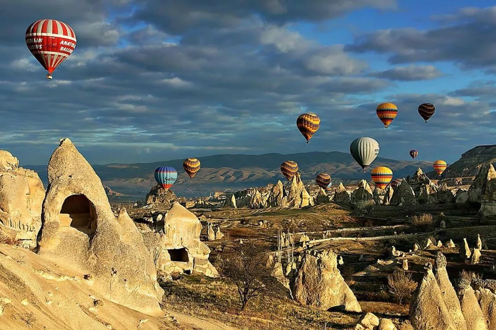
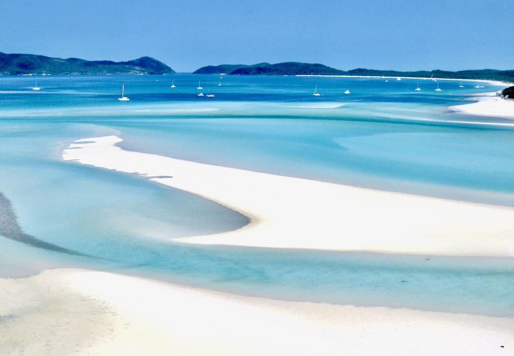
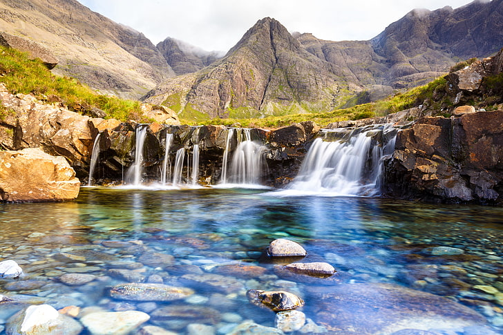
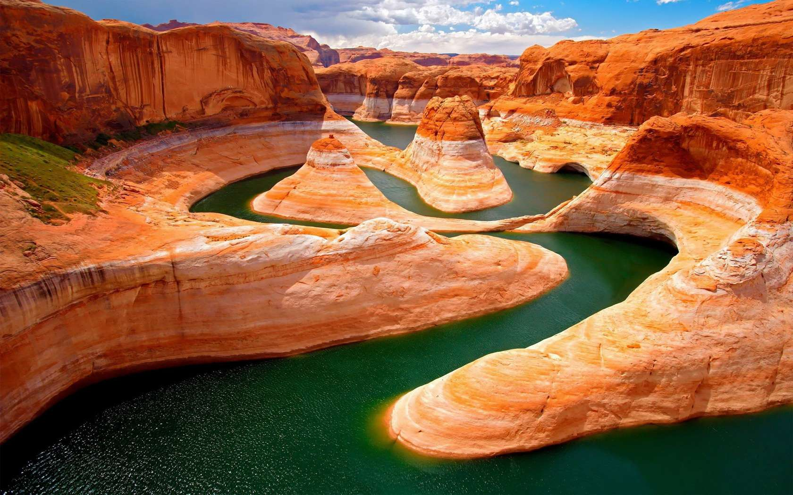

HOME
Top places you must visit

CAPPADOCIA,TURKEY
Cappadocia is a living example of just how odd yet beautiful nature can be.
It presents a fantasy-like landscape that looks like it’s been plucked out of a fairy tale, alien-like hills
and boulders that seem as if they’ve been transported from another planet.
The humans who once lived here used the area’s soft stone
to create underground shelters, leaving all kinds of weird architectural wonders in their wake.

WHITEHAVEN BEACH,AUSTRALIA
It’s easy to see why the Whitehaven Beach ranks among the most photographed beaches in the world.
The magnificent 7 km stretch of white sand that feels like your own private slice
of heaven presents an aura of peace and serenity, letting you experience relaxation at its very best.
The beach is accessible via boat from Hamilton Island and the ports of Shute Harbour and Airlie Beach.

FAIRY POOLS,SCOTLAND
You might suddenly start believing in fairies the moment your eyes fall on the Fairy Pool, an ethereal oasis
that bewitches visitors
with its crystal clear water, picture-perfect scenery and magical atmosphere. The waters are freezing,
but if you’re searching for wild swimming adventures, it truly doesn’t get better than this

GRAND CANYON NP,USA
There’s a reason more than 5 million people choose to visit the Grand Canyon each year. It’s one of
the most magical destinations on the planet. Irrespective of how much you read about the Grand Canyon,
you’re sure to end up
being spellbound, for nothing prepares you for the magical sight
that this wonder has to offer. Considered to rank among one of the top 7 wonders of the world,
MACHU PICCHU,PERU
And finally there’s the great Machu Picchu, the so-called lost civilization of the Incas. Machu Picchu was
built around the year 1450 and was occupied for almost 100 years before the Spanish Conquest. This
mesmerizing city was
never discovered by the Spaniards and was literally forgotten until the early 20th century,